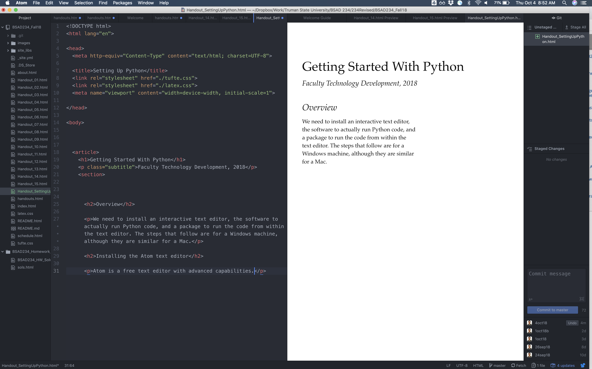

Getting Started With Python
Faculty Technology Development, 2018
Overview
We need to install an interactive text editor, the software to actually run Python code, and a package to run the code from within the text editor. The steps that follow are for a Windows machine, although they are similar for a Mac. Let me know if you run into problems following these steps!
Installing the Atom text editor
Atom is a free text editor with advanced capabilities. (I'm actually writing this handout in Atom, see the screenshot below.)
- Go to here and click Download. It should automatically detect what kind of computer you're using.
- Save the file to your Desktop (or wherever ....)
- Double-click on the file to open the installer. A cute little animation will open that says "Atom is being installed. It will launch once it's done." It should open when it's done.
- Click "Yes, Always" if it asks you whether it should be the default atom URL handler.
- You can play around if you like, but now we need to get Python installed.
Installing Python
Python is a programming language, so we need a way for your computer to run it. We're going to use Anaconda, which makes installing Python simple.
- Go to here and under "Python 3.7 version" click Download.
- Save the file to your Desktop. It's a large file (631MB), so it may take a few minutes to download. (You don't need to give your email address to get a "cheat sheet" as will popup on the webpage after you download.)
- Double-click on the file. Hit Next, I Agree, Next, Next for the destination folder, select both Advanced Options, and click Install.
- A green bar will popup showing the installation progress. You can probably pause and go work on something else, as this will probably take more than a few minutes.
- When it says Completed, hit Next, Skip, unselect both "learn more" boxes and click Finish.
Running Python from Atom
Now we're going to get Atom to play nicely with Python!
- Go back to Atom, which should still be open on your computer.
- In Atom, click on the tab labeled "Untitled." Type this in
- Click Control-S to save the file. Just save it to your Desktop for now, call it "test.py".
- Your code should now change colors as Atom recognizes it as a Python file. It will be pretty.
- There should be a pane open that says "Get to know Atom." In that pane, click on "Install a Package" then "Open Installer".
- In the Search Packages box, type in "Hydrogen."
- Under Hydrogen 2.6.0, click Install. It will take a few minutes.
- Now, click in the Windows search box at the bottom of the screen, and type in Command Prompt. Open the command prompt, and type the following in:
- After that runs, type the following in the command prompt:
- Close the command prompt.
- Close Atom, then re-open it.
- Once it's open, click back on your file "test.py", which will show up in a tab at the top of the editor.
- Click on what you typed in, and hit Control-Enter.
- The code should run and print "Hello, Truman!" off to the side.
- On a new line, type "2+2" and hit Control-Enter. It should display "4" to the side. Now you can do math.
# My first Python program
print('Hello, Truman!')
python -m pip install ipykernel
python -m ipykernel install --user